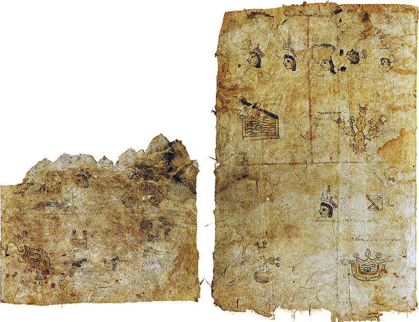

Codex
History and Publications
In its current state as a collection of separate, painted front-and-back folios, the Matrícula de Tributos seems inspired by a European book, and not by an indigenous Mesoamerican screenfold. However, the folios of the Matrícula were not originally created to be seen as discrete pages. While today each folio consists of two separate sheets of amate paper glued back-to-back, the fact that the front and back of several of these folios show different damage patterns indicates that the Matrícula originally consisted of a series of separate sheets, each painted on only one side. These sheets were damaged before being glued together as they are today. For example, only half of the image on the front side of folio 1 survives (folio 1r, recto). However all of the image on the back side (folio 1v, verso) is intact. In other words, what looks today like a colonial document, strongly influenced by European models of a book, originally must have had a different physical form. Indeed, the Matrícula we now know may have been assembled from a series of prehispanic painted sheets.

Differential damage of folio 1r (left) versus folio 1v (right).
It also seems probable that even after the sheets of the original Matrícula were glued together, at least three of them (two with front-and-back images, and one sheet painted only on the front) were lost. What remains today is not only reconfigured, but fragmentary as well. Evidence for the previous existence of these pages is found in the Codex Mendoza, a mammoth account of life in prehispanic Central Mexico created around 1541 by a Nahua scribe using European paper. This book records many things: the conquests of the Aztecs, the tribute that was sent from conquered provinces to the island capital of Mexico-Tenochtitlan, and indigenous life-cycle rituals from birth to death. The second section of the Codex Mendoza, which deals with tribute, seems to have been copied from the Matrícula de Tributos. For example, pages that are glued front-to-back in the Matrícula always appear next to each other in the Codex Mendoza, and two pairs of adjacent tribute provinces shown in the Mendoza are missing from the Matrícula (Axocopan and Atotonilco, which should appear between folios 4 and 5, and Tlachquiavco and Tochtepec, which should appear between folios 12 and 13). This suggests that at least two front-back folios once included in the Matrícula were used to paint the Codex Mendoza, but have since gone missing. The final tribute province shown in the Mendoza, Oxitipan, is also missing from the Matrícula, suggesting that a third folio, painted on only one side, has also disappeared.
These missing pages are not the only difference between the tribute lists of the Matrícula and the tribute lists of the Mendoza. When the artist of the Mendoza—probably a “master of painters” named Francisco Gualpuyogualcal—copied the images from the Matrícula, he made important changes. Some of the sums of items are different in the Matrícula versus the Mendoza. For example, the Mendoza shows many more bins of beans and corn offered as tribute. The most striking difference between the two documents is their reading order. Where the Matrícula is designed to be read starting in the lower left and reading up the page, the Mendoza’s tribute pages are designed to be read starting in the upper left and reading down the page. The image below shows how the tribute offered from the province of Couaixtlahuacan, in Oaxaca, is depicted in these two documents. The Matrícula version is on the left (folio 12r), the Mendoza version on the right (folio 43r). The Mendoza’s images, in other words, are arranged according to the reading patterns found in Western alphabetic books. The indigenous reading order of the Matrícula further suggests that its originally one-sided pages were created before the Europeans arrived.

The province of Couaixtlahuacan, as represented in the Matrícula de Tributos (left) and the Codex Mendoza (right).
It is difficult to guess when the Matrícula was painted, but the indigenous reading order of the Matrícula suggests that its originally one-sided pages were created by a number of different scribes before the Europeans came, perhaps over several years. Three clues, however, suggest that it was painted only a few years before 1521. First, one of the tribute provinces shown in the Mendoza (on a sheet now missing from the Matrícula), is Tlachquiaco (in Oaxaca), which was not conquered by the Aztecs until 1511-1512. Second, the list of tribute goods from the Tepeyacac province (folio 11v of the Matrícula) lists tribute in human captives from three places: Tlaxcala, Cholula, and Huexotzingo. Huexotzingo had briefly allied itself with the Aztecs during the period 1512-1516, so it is doubtful that slaves from Huexotzingo would have been demanded as tribute during those years (although this would have been possible after 1516, when Huexotzingo fell from the status of ally to vassal). Third, the list of goods demanded from the province of Tlapa (in Guerrero) includes four bundles of cloth. According to local records of Aztec tribute demands painted in Guerrero itself, cloth was not demanded from Tlapa until 1511, and in 1519 the Aztecs increased tribute in cloth from three bundles to four.
The Codex Mendoza was shipped across the Atlantic soon after it was painted, and eventually arrived in England. It was acquired by John Selden, and in 1659 (5 years after Selden’s death) it was deposited in the Bodleian Library in Oxford (along with the Ñudzavui Codex Selden, another colonial document included in Mesolore). The Matrícula, however, remained in Mexico. We know nothing of the Matrícula until it was acquired by Lorenzo Boturini Benaducci in the middle of the eighteenth century (when it is listed in several of the 1740s inventories of indigenous documents he collected). Boturini arrived in New Spain in 1736, and spent eight years studying, and collecting, prehispanic and colonial objects and manuscripts as part of his interest in the apparition of the Virgin of Guadalupe. In 1743 Boturini was arrested (for, among other things, entering New Spain without an official permit), imprisoned, and sent back to Spain. Boturini’s collection was confiscated, and slowly dispersed over the following decades—some documents ended up in Berlin, others in Paris, and others stayed in Mexico City.
Two folios of the Matrícula were brought to Philadelphia, donated to the American Philosophical Society in 1830 by Joel Roberts Poinsett. Poinsett had been the official representative of the United States government in Mexico in the 1830s. Apart from his interest in Mexican antiquities he was also an amateur botanist, and is best remembered for introducing to the United States the Mexican plant which now bears his name in English: the poinsettia (Nahuatl cuetlaxochitl, Latin Euphorbia plucherrima, Spanish noche buena). The two folios he brought to the U.S. (sometimes referred to as “The Codex Poinsett” or “The Tribute-Roll of Moctezuma”) were returned to Mexico in April 1942, as part of the ceremonies surrounding the dedication of the Biblioteca Benjamin Franklin in Mexico City. The story behind this repatriation is fascinating, in part because it was voluntary (an act atypical for the repatriation of bought, sold and stolen artifacts from around the world). Here is how it happened.
On October 6, 1937, Daniel Rubín de la Borbolla (of the Universidad Nacional Autónoma de México) wrote to the American Philosophical Society. He pointed out that “The Tribute-Roll of Moctezuma” was part of a longer manuscript still in Mexico, and he requested photographs of the two folios in Philadelphia. According to the minutes of an American Philosophical Society meeting on October 20, 1937, the Committee “unanimously agreed” to send the actual pages back to Mexico (rather than just photographs). This took some time. The original plan fell through: President Roosevelt was to personally return the pages at the Eighth American Scientific Congress, held in Washington, DC in May of 1940. As a result, the actual repatriation was delayed until 1942, and it took place in Mexico City. On April 14, H. M. Lyndenberg (Librarian and Director of the new Benjamin Franklin Library in Mexico City) gave a short speech before presenting the documents to Alfonso Caso (distinguished Mexican archaeologist and then Director of the Instituto Nacional de Antropología e Historia). In many ways, this voluntary act of repatriation is not surprising, given the progressive political climate of the 1930s and Roosevelt’s “Good Neighbor Policy” toward Latin America.
The earliest published reproduction of the Matrícula dates to the eighteenth century. Black on white engravings of all of its surviving pages were published by Francisco Antonio Lorenzana y Buitrón in his 1770 Historia de Nueva España. Color lithographs of the document were published in Antonio Peñafiel’s 1890 Monumentos del Arte Mexicano Antiguo, and (as the “Codex Poinsett”) in Daniel G. Brinton, Henry Phillips Jr., and J. Cheston Morris’ 1892 “Tribute Roll of Moctezuma” (as part of the Transactions of the American Philosophical Society). More recent color editions have been published in 1968 (by the Secretaría de Gobierno, México), 1980 (by the Akademische Druck-und Verlagsanstalt, Graz, Austria), 1991 (by the Secretaría de Hacienda y Crédito Público, México), 1997 (by the Fondo de Cultura Mexicana, México), 2003 (a special issue of the magazine Arqueología Mexicana) and 2007 (as a CD-ROM by CONACULTA and the Instituto Nacional de Antropología e Historia, México). A newly-photographed digital copy can also be consulted online as part of the Biblioteca Digital Mexicana.

Engraving of the province of Couaixtlahuacan published by Francisco Antonio Lorenzana y Buitrón in his Historia de Nueva España.
Page Contents

Imperial Outposts
PAGE 01
FOLIO 1R

Imperial Outposts
PAGE 02
FOLIO 1V

Tribute of
Tlatelolco
PAGE 03
FOLIO 2R

Tribute of
Petlacalco
PAGE 04
FOLIO 2V

Tribute of
Acolhuacan
PAGE 05
FOLIO 3R

Tribute of
Quauhnahuac
PAGE 06
FOLIO 3V
Tribute of
Huaxtepec
PAGE 07
FOLIO 4R

Tribute of
Quauhtitlan
PAGE 08
FOLIO 4V

Tribute of
Hueypuchtlan
PAGE 09
FOLIO 5R

Tribute of
Atotonilco
PAGE 10
FOLIO 5V

Tribute of
Xilotepec
PAGE 11
FOLIO 6R

Tribute of
Quahuacan
PAGE 12
FOLIO 6V

Tribute of
Tulucan
PAGE 13
FOLIO 7R

Tribute of
Ocuilan
PAGE 14
FOLIO 7V


Tribute of
Malinalco
Tribute of
Xocotitlan
PAGE 15
FOLIO 8R

Tribute of
Tlachco
PAGE 16
FOLIO 8V

Tribute of
Tepequacuilco
PAGE 17
FOLIO 9R

Tribute of
Cihuatlan
PAGE 18
FOLIO 9V

Tribute of
Tlapan
PAGE 19
FOLIO 10R


Tribute of
Tlacozauhtitlan
Tribute of
Quiauhteopan
Tribute of
Yoaltepec
PAGE 20
FOLIO 10V

Tribute of
Chalco
PAGE 21
FOLIO 11R

Tribute of
Tepeyacac
PAGE 22
FOLIO 11V

Tribute of
Coixtlahuacan
PAGE 23
FOLIO 12R

Tribute of
Coyolapan
PAGE 24
FOLIO 12V

Tribute of
Xoconochco
PAGE 25
FOLIO 13R

Tribute of
Quauhtochco
PAGE 26
FOLIO 13V

Tribute of
Cuetlaxtlan
PAGE 27
FOLIO 14R
Tribute of
Tlapacoyan
PAGE 28
FOLIO 14V

Tribute of
Tlatlauhquitepec
PAGE 29
FOLIO 15R

Tribute of
Tochpan
PAGE 29
FOLIO 15V
Tribute of
Atlan
PAGE 31
FOLIO 16R

Tribute of